Meu primeiro documento HTML e esse documento será usado para documentar toda minha tragetória no HTML5 e CSS3!
Quebra de linha
A quebra de linha pode ser utilizada usando a TAG "br" como agora
O paragráfo pode ser utilizado com a TAG "p" já subtitulos "h1" que vai do h1 pro h6
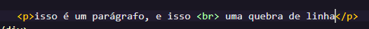
Colocando imagens
Colocar imagens é facil, basta colcoar a tag "img" e lembrar de colocar a imagem no diretório correto, ai basta somente escolher a pasta e o arquivo utilizando o ./como atalho, a quebra de linha também serve para as imagens. Onde também é possivel usar imagens da internet apenas copiando o endereço da imagem
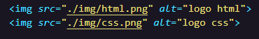
Como colocar Favicon
Não existe mistério na hora de colocar o favicon, basta colocar o código "link:favicon" e escolher o seu favicon no href, lembrando que o favicon fica ná tag head.
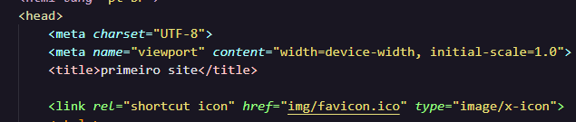
Negrito e itálico
Para usar o negrito, basta colocar a tag "strong"que você consegue escrever em negrito já em itálico basta colocar a tag "em",e uma pequena dica, selecione a parte que você quer colocar em itálico pressione CRTL+SHIFT+P,procure por "wrap with abbreviation" ou apenas digite "abb" , escreva "em" e dê enter e assim você vai colocar seu texto em itálico o mesmo serve para colocar em negrito.
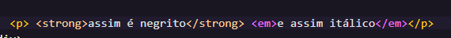
Tags "obsoletas"
com a mudança do HTML4 pro 5,algumas tags perderam seu "valor", porque deixaram de fazer sentido como por exemplo a tag "i" e "bold", que eram usadas para colocar o texto em itálico e em negrito respectivamente hoje não são mais usadas porque alteram a forma do texto que é algo feito pelo CSS, ou seja tudo que alterar sentido é do HTML e o que altera forma é do CSS.
Formatação de textos
agora vamos aprender mais algumas Formatações de texto
Para marcar um texto basta usar a tag "mark".
Para sublinhar um texto basta usar a tag "ins".
Para marcar um texto como excluído basta usar a tag "del".
Para deixar o texto menor se usa a tag "small" .
Para colocar alguma letra ou número na parte de cima basta usar a tag "sup".
Para colocar alguma letra ou npumero na parte de baixo basta usar a tag "sub".
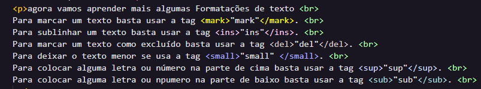
Citações de códigos
a tag "code" juntamente com a tag "pre" ,resumidamente serve para você escrever códigos
EX
x = int(input("escolha um número entre 0 e 10"))
if x == 2 :
print("você acertou ! ")
else:
print("você errou ! " )
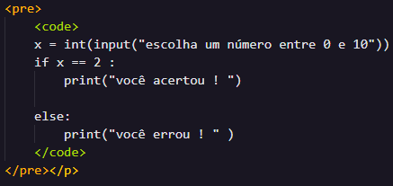
Para citações você pode usar 2 tags, que seria a "q" e a tag "blockquote", onde a primeira só adciona as aspas ao texto e a segunda permite que você anexe o link da citação com o seguinte comando blockquote cite= linkdacitação.
abreviações
Abreviar também é facil, basta usar o código "abbr" ai quando vc passar o mouse por cima da palvra irá aparecer o significado da abreviação, assim : HTML
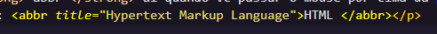
Listas
Exite 3 tipos de listas no HTML que é a lista ordenada "ol",a lista não ordenada "ul"e a lista de definição "dl"
A lista ordenada como o nome já diz, ela faz uma lista ordenando os fatores da lista:
acordar
estudar
trabalhar
Você pode personalizar as listas com as seguintes configurações, usando "type= A" os números serão substituidos por letras,podendo também ser maiúsculos "A" ou minúsculo "a",da mesma forma você consegue alterar por números romanos, usando o "i" ou "I".Podendo também ser alterado o começo usando o "start="2"".
As listas não ordenadas, não númeram os itens da lista apenas indicam que é uma lista, podendo também ser personalizada usando "disc", "square" e "circle".
varrer a casa
tomar banho
dormir
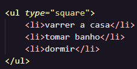
A lista de definição funciona como um dicionário, você usa o "dl" para inicar a lista, utilizar o "dt" para a definição de termo e o "dd" para o detalhe da definição.
Garrafa
Objeto usado para armazenar água.
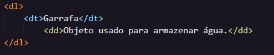
Links externos
Os links podem ser adcionados com a tag "a" e é bem simples, basta escrever o nome e colocar o link que quiser, Curso em video, lembrando que o link fica na parte "herf" e você precisa colocar "target="_blank"" que é para que o link não sobreponha o site que está sendo exibido, porém se o link for do seu site basta usar "target="_self"" que ao clicar o link vai sobrepor a página.
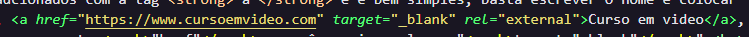
Adptar imagem de acordo com o tamanho da tela
Vamos aprender a como deixar a imagem dinâmica para que não afete negativamente usuários de outros aparelhos
Para fazer isso, basta usar a tag "picture" e dentro da tag você irá colocar sua imagem,agora vem a parte mais complicada, comece usando a tag "source:media:type", onde você irá mudar o media para "max-width" e escolher o tamanho da sua maior foto, no srcset você vai adicionar o diretório da imagem e no type vai colocar o tipo de imagem que é, png, jpeg, gif, etc.. Se você for usar mais de uma imagem remdimensionada é preciso colocar em ordem crescente para que dê certo, caso contrário a imagem menor não irá aparecer se diminuir o tamanho da tela, ex:
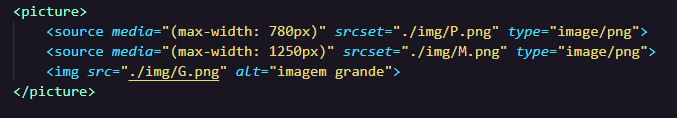
Àudio
Para reproduzir áudio basta usar a tag "audio", colocar o diretório e o parâmetro controls e o parametro preload="metadata" para que o arquivo só comece a carregar quando você der play,desse jeito:
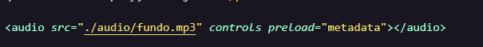
Algo muito importante em um site é o quão leve ele é, ou seja você precisa colocar arquivos leves para que seu site não seja pesado e o algoritmo possa recomendar o seu site para outras pessoas,e tendo isso em mente como fazer para colocar outros formatos de arquivos? e porque fazer isso ? a resposta é simples, porque alguns navegadores não suportam certos formatos de video ou audio e para isso basta você fazer o seguinte:
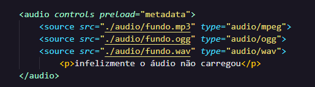
Videos
Adcionar videos no HTML é semelhante ao audio, basta usar a tag "video" com os parâmetros controls e o preload para carregar seu vídeo só quando for clicado.
O video funciona assim como o audio, você precisa usar mais de um formato para que todos os navegadores aceitem, existem mais 2 parâmetros utilizados que são o loop que serve para reiniciar o video ou audio assim que acabar e o poster que serve para você colocar uma capa no seu video.
Videos do youtube
O youtube é a 2° maior ferramenta de busca, e pensando nisso o youtube tem uma ferramenta para que você possa hospedar o video dele no seu site só copiando o codio que ele lhe entrega, basta você escolher o video clicar em compartilhar e em incorporar que você irá recever o código do video e agora basta só colar ele no seu index.
Onde esse video não vai consumir seus dados, irá consumir os dados do youtube é uma otima sacada para economizar dados e fazer o site ser mais leve.
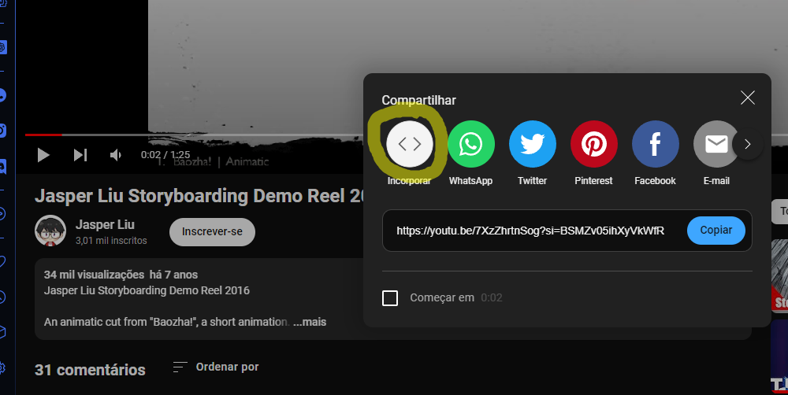
CSS!
Hoje finalmente vamos aprender a estilizar o nosso site, existem 2 formas eficientes de estilizar a pagina com HTML que é o estilo interno e externo. No estilo interno você vai estilizar sua página no head normalmente, só que só irá servir para aquela página especifica, EX:
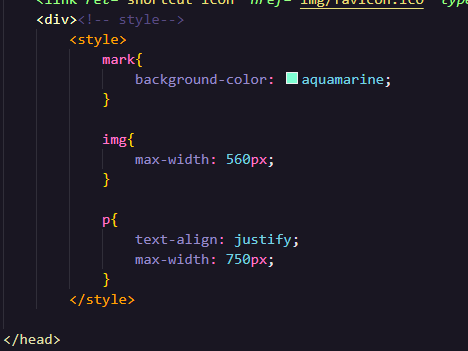
E a externa, você irá no head criar um arquivo link:css colocar o cursor em cima do diretório e apertar CRTL+Click ai o proprio VSCode irá lhe direcionar para criar um arquivo CSS.
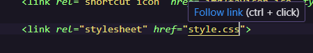
Agora que você esta com seu arquivo CSS em mãos, basta utilizar a regra @charset "UTF-8" para que o CSS não de erro por falta de compatibilidade com acentuação.Agora vamos